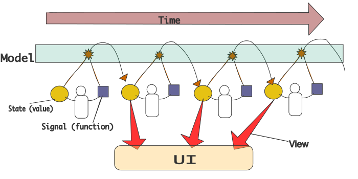
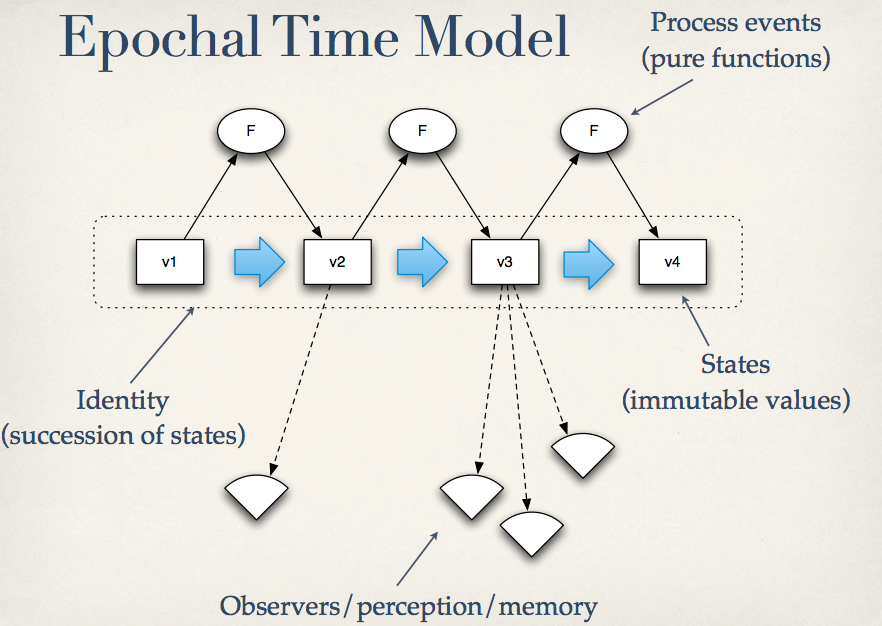

Pasta is a function that helps you write JavaScript MVC applications functionally. Pasta's state management model is heavily influenced by that of Clojure's.
The project is hosted on GitHub. Eaxample application is available here.
Downloads and Dependencies
Pasta depends on Underscore (or lodash if you prefer), and Underscore-fix. jQuery is optional.
Not Your Daddy's MVC Framework
In fact, Pasta isn't even a framework, nor a library but a single 35 line function. If you are familier with FP(Functional Programming), Pasta is a higher order function much like fold and compose . Just like fold abstracting the essence of recursion, Pasta abstracts the essence of entire JavaScript application. Just like compose taking functions to create a function, Patsa takes collections of functions to create an application. If frameworks are tools or guidelines to construct a building, Pasta is a machine that builds the entire building according to the blueprint you feed it.
Smallest Example
Let me show you a tiny example. Just note it's a bit overkill to use Pasta for an app of this size.
<!doctype html>
<html>
<head>
<mata charset="utf-8">
<script src="components/underscore/underscore.js"></script>
<script src="components/underscore-fix/underscore-fix.js"></script>
<script src="components/Pasta/Pasta.js"></script>
<script src="components/jquery/jquery.min.js"></script>
</head>
<body>
<h1 class="message"></h1>
<input type="text" id="message-input" />
<button id="message-submit">Change message</button>
</body>
(function (window) {
'use strict';
/* Model is a collection of functions that are responsible for every data used in an app.
* Each function takes the current state and returns a diff.
*/
var Model = {
change_message: function (state, msg) {
return { message: 'You said ' + msg + '.'};
}
};
/* View react to changes made to the state and redirects it to the UI */
var View = {
message: function (UI, state) {
UI.render_message(state.message);
}
};
/* UI touches the DOM */
var UI = {
render_message: function (msg) {
$('.message').text(msg);
}
};
/* Pasta the function composes everything and turn them into an application. */
/* The function returns a function that is used to communicate with the app. */
var pasta_signal = Pasta(Model, UI, View);
/* Controllers use the signal function */
$('#message-submit').click(pasta_signal('change_message', function (e) {
return $('#message-input').val();
}));
} (window));Here goes the live demo.
Pasta Is Simple
Simple in the sense Rich Hickey told us in his talk Simple Made Easy. Pasta lets you treat data as data and it turns uncontrolled global state into a concrete first-class value. Pasta is mostly functional. The model is a collection of pure functions. The application itself is a pure function that maps an application state to an UI state.
Pasta is simple because Pasta apps are not object oriented. Objects should be avoided where possible because they introduce implicit global state, makes it hard to inspect data (you know, "information hiding") and makes it so easy to corrupt data.
Pasta is simple because it doesn't do anything that it isn't supporsed to do. There are good data manipulation libraries already, namely Underscore. There are good UI manipulation libraries already, namely jQuery. No point reinventing the wheel is there?
MVC the Pasta way
With all that in mind, lets see how Pasta effectively forces presentation domain separation, by looking at the classic TodoMVC example. The full source is available here.Model
var Model = _.module({}, add_todo, toggle_status, clear_completed, save_app, load_app);
//Add a new todo entry
function add_todo (state, title) {
//check that it's not empty before creating a new todo.
var trimmed_title = title.trim();
if (_.isEmpty(trimmed_title)) return {};
return { todos: state.todos.concat({title: title, completed: false}) };
}
//Mark a todo either active or complete
function toggle_status (state, data) {
return { todos: _.map(state.todos, function (todo) {
if (todo === data.todo) return _.assoc(todo, 'completed', data.completed);
return todo;
}) };
}
//Clear completed todos
function clear_completed (state) {
return { todos: _.reject(state.todos, _.flippar(_.at, 'completed')) };
}
//Save the entire app to localStorage
function save_app (state) {
localStorage.setItem('pasta-todo', JSON.stringify(state));
return {};
}
//Recover the app from localStorage
function load_app (state) {
return localStorage.getItem('pasta-todo')
|| { todos: [] };
}
The Model is a hashmap mapping signal names to binary functions. _.module() provides a nice way to write hashmap-of-functions prettily. Each function receives the current state as its first argument. The second is whatever is passed in via a signal which we will come to later. The state is just a plain hashmap which you mustn't mutate yourself. The role of each function is to return a patch. Patches are, again, just a plain hashmap.
Since it is advised to prefer primitive types over user-defined objects, we can do some crazy stuff like serializing it into JSON and save somewhere and recover it later. Because the state passed is a immutable value, we can store it into the state itself, meaning implementing a full `undo` functionality is a piece of cake.
When you need to communicate with a server, it is recommended to use promises as state values. So for example if you need to fetch some todos from the server you would do something like this:
_.module(Model, request_todos);
function request_todos (st) {
return {todos: $.getJSON('/notes') };
}
_.module(View, todos);
function todos (UI, st) {
st.todos.done(UI.render_todos);
}
View
var View = _.module({}, todos);
function todos (UI, state) {
UI.render_todos(state.todos);
}
The view is a hashmap mapping field names of the state to ternary functions. Each function gets called whenever the field the function is responsible for changes. The first argument is the UI module which we will see next. The second is the new state after the change. The last argument is the value of the field before the change. The role of each function is to call functions (uh, ahem, subroutines) in the UI module. Although the functions receive the state, mutating it is no use since it is a fresh copy. Don't try.
UI
var UI = _.module({}, render_todos);
function render_todos (todos) {
$('#todos').html(_.template(TODOS_TEMPLATE, todos));
}
No description is needed for the UI module because it isn't really a part of Pasta. Pasta does not care how you manage the UI. this makes Pasta portable accross different platforms. In fact Pasta initialy targeted Titanium Mobile as a platform and it probably still runs.
Generation of An App
var pasta_signal = Pasta(Model, UI, View);
Throw all of the above three modules at Pasta to generate the app. Pasta leaves a function behind which is the only connection we have to the running app. We will make heavy use of this function in our controllers.
Controller
$('#new-todo').keyup(function (e) {
if (e.which === ENTER_KEY) {
signal('add_todo')($(this).val());
}
});
$('#clear-completed').click(signal('clear_completed'));
Controllers are not grouped into a module because there's no need to. Controllers can be anything that signals. A signal invokes a model function and whatever you feed to signal becomes the second argument to the function.
A Diagram
Here is a conceptual diagram of Pasta applications.
Which looks a lot like the diagram of Clojure's time model from Are We There Yet.
Experimental Features
A common syntactic pattern found in Pasta app is the duplication of identity name in a line. When you change the value of an identity, you need to do something like this:
function add_todo (st, title) {
return { todos: _.conj(state.todos, {title: title, completed: false})};
}This is a bit annoying so I came up with this following syntax.
function add_todo (st, title) {
return { todos: [_.conj, {title: title, completed: false}] };
}If you think this is a good idea, you can enable it by passing true as the fifth argument to Pasta. I also recommend to check out Macaroni in which it takes full advantage of this strange syntax.